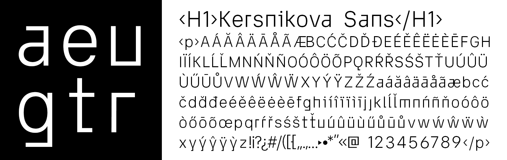

Our brief was to design a site that communicates the values of the institute to potential visitors and collaborators while trying to avoid as many stereotypical elements of a modern “mainstream web design” as possible.
Taking inspiration from the unique nature of the institute itself, the design of the website reflects their philosophy of combining science, culture, and education.
When the site loads first thing you see is the logo which expands into the graph that serves as the main navigation. We used the basic principles of tree chart as a representation of interconnectivity of pieces of information, concepts, and activities. Structure of the site is flexible and always in motion, with each click forming new connections and expanding blocks of copy, video, and imagery.
In order for the design to be suitable for all three conceptually different venues, we tried to keep it clean by using the minimal number of different visual elements. So to provide an element of branding we used a custom typeface that I designed specifically for the site. It is a hybrid between neo-grotesque and geometric sans serif with few different quirks to make it recognizable while still remaining legible enough for longer texts.

The site is built as a progressive web app with the Nuxt.js framework and uses a 2D rigid body JavaScript physics engine to achieve the bouncy and fluid motion with 60fps on the desktop and mobile platform. The website is currently in the latest stage of implementation and should be online in a couple of weeks. Designed in colaboration with Luka Grčar. Coding done by lgs036.